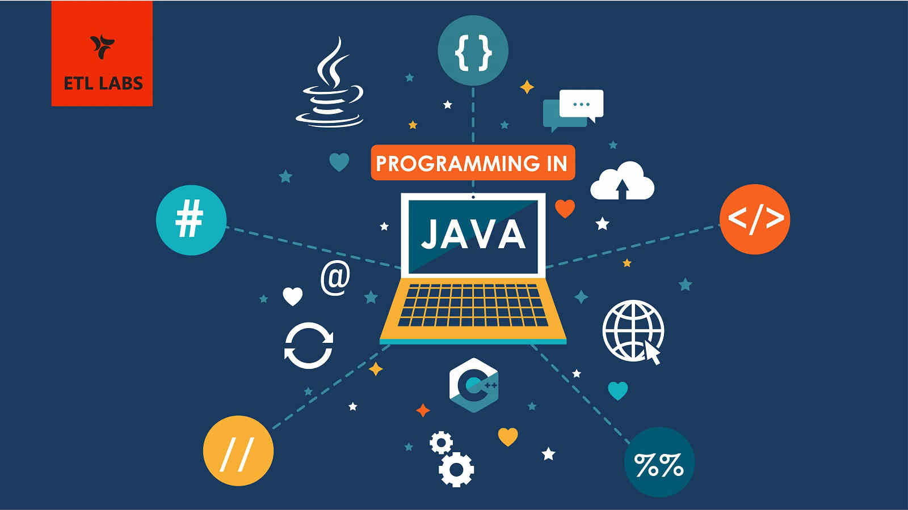
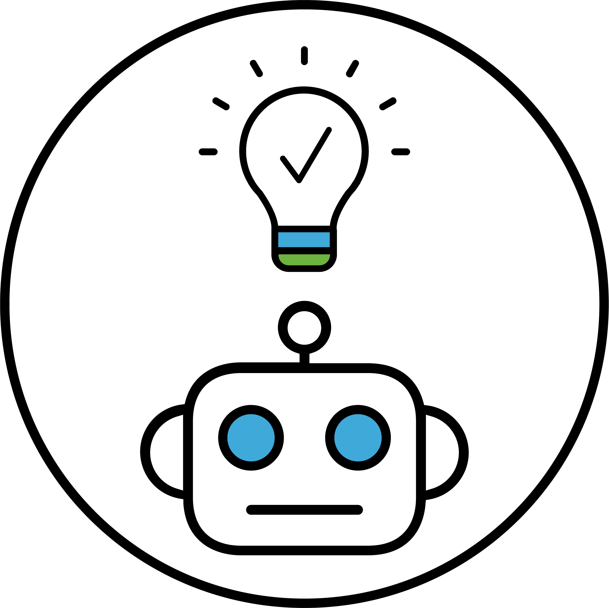

Selamat Datang di Portofolio Saya
Hello there 👋, I'm Ardhan Kurniawan, right now I am studying at Universitas Semarang (USM).

Tentang Saya
Saya suka Pemrograman dan Jaringan Internet. Saat ini, saya memiliki pengalaman dalam bahasa pemrograman seperti Javascript, PHP, dan Python
Saya juga telah bekerja pada berbagai proyek yang mencakup pembuatan situs web dan pengembangan aplikasi.
Harapannya, saya juga ingin menguasai Bahasa Pemrograman Java & Machine Learning




Portofolio

Tugas Akhir SMK ~ Monitoring Resource Network
- Tujuan Tugas Akhir
- Memonitoring kesehatan router
- Melihat apakah traffic internet tinggi atau tidak
- Alat dan Bahan
- Winbox
- Grafana
- Prometheus
- SNMP Exporter
- Virtualbox
- Router Mikrotik
Tugas Akhir SMK ~ Monitoring Resource Network
- Tujuan Tugas Akhir
- Memonitoring kesehatan router
- Melihat apakah traffic internet tinggi atau tidak
- Alat dan Bahan
- Winbox
- Grafana
- Prometheus
- SNMP Exporter
- Virtualbox
- Router Mikrotik
Kontak
Powered by Ardhan Kurniawan